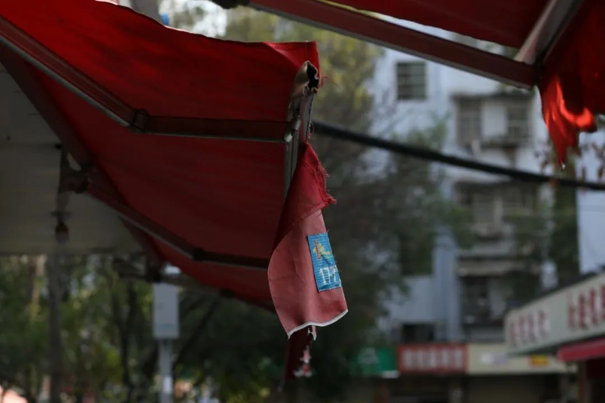
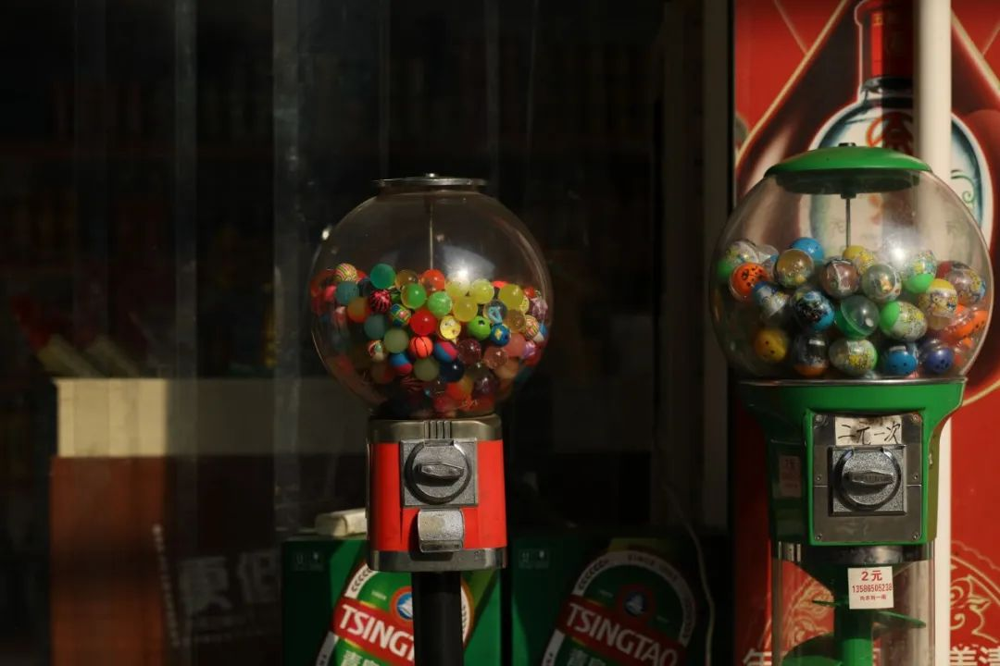
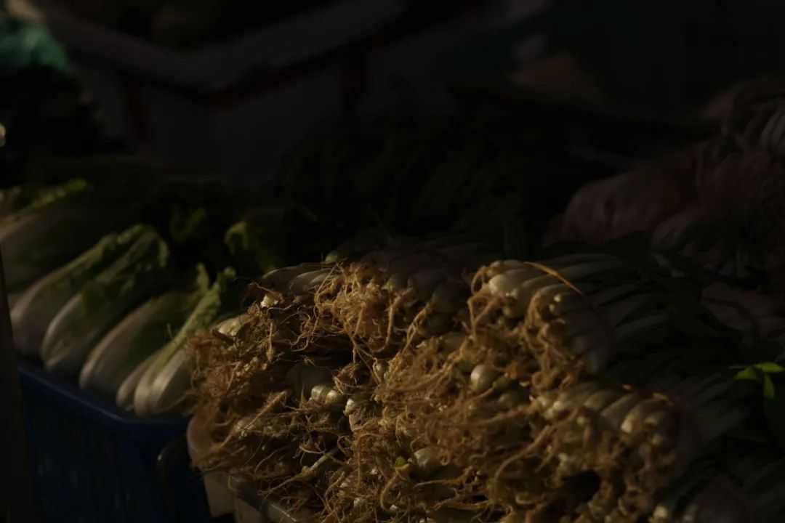
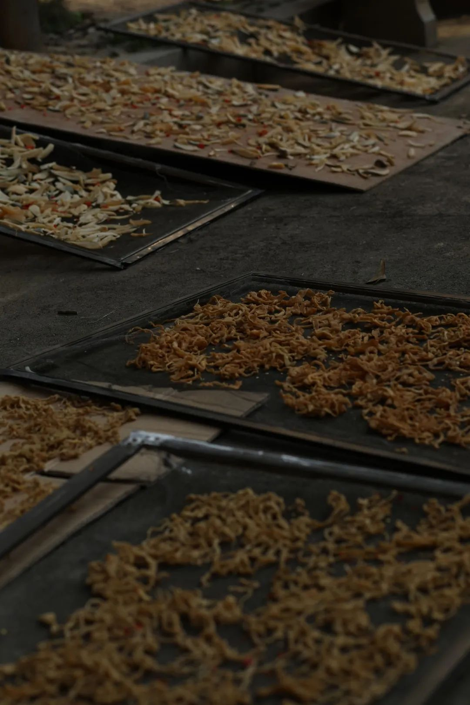
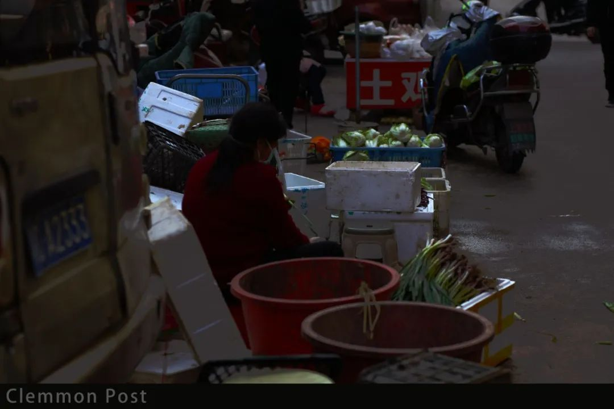
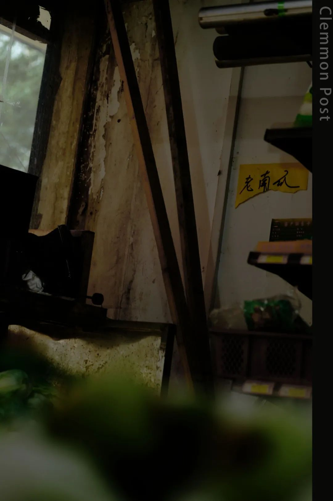
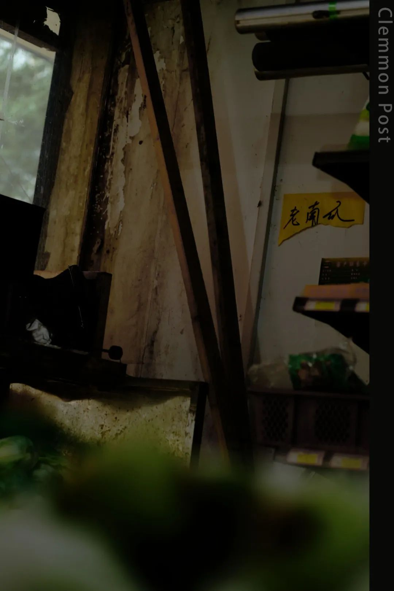
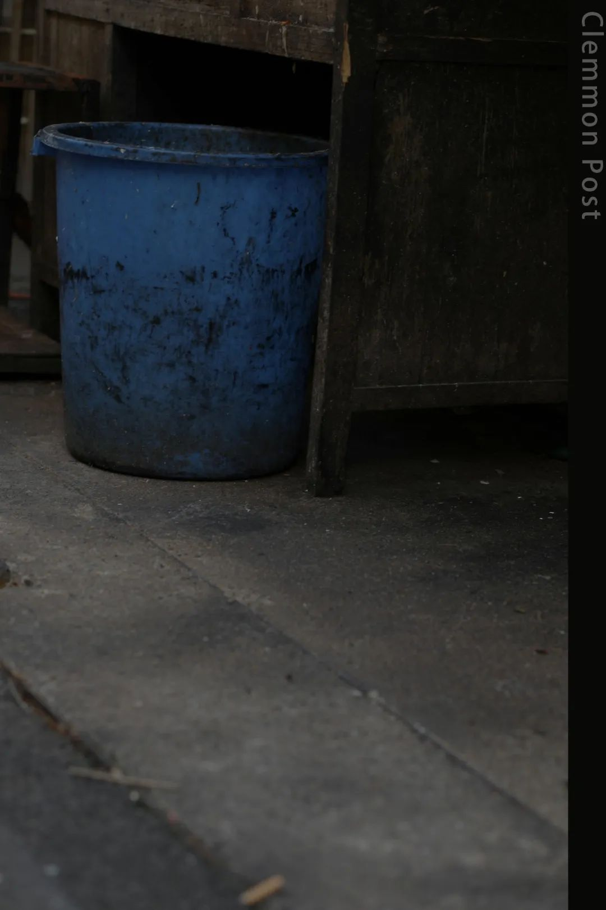
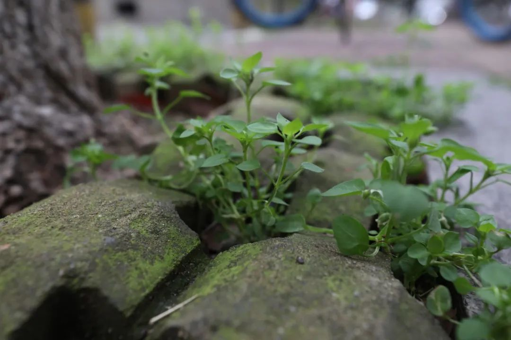

本文是张衔瑜第142篇推文
共计2021个字

最近还是在看这本行为经济学的书。说是认知科学也对，因为是在用认知的办法写普通人和理性经济人设定之间的出入。
框架效应这一章首先进行的思想实验是：
· 某赌注有10%的概率赢得95元，有90%的概率损失5元，你会接受这个赌注吗？
· 某彩票有10%的几率赢得100元，有90%的概率什么也得不到，你会花5元买这张彩票吗？
作者找了好多这样的纯粹数字和文字的游戏，简简单单地勾勒出来了自己要说的故事。其实蛮精妙的。仔细想想，这两件事说的一样，然而情绪的框架却很难抵挡。
普通人在获得的时候倾向于确定的事，而在损失的时候偏向赌一把。
作者说这是新兴的神经经济学，将损失厌恶等一系列名词和人的大脑活动关联起来。不知道会不会以后和脑机交互关联起来。理性经济人会判定到底自己面对的是什么情况，而大多数参与经济活动的人没有经过训练，很难客观地看待自己的处境，也意识不到。
写到这里我突然不想往下继续写这本书了。
我再怎么写，也没有原著写得好。而如果我在看这本书的时候花的时间是一个单位，那必然有三倍到五倍于单位的时间是在想这本书到底说了个什么事、以及思想实验太久了之后因为疲倦而去睡觉。每翻几页都觉得说得挺不错的而且都能从我熟悉的舆论场找到原型。按下不表。
我没有强制自己写周记的习惯。
日记经常有在写，虽然也时多时少。
情绪就像一支跷跷板，自然的情况下也就是倒向这一边或者那一边。没有弹簧回复归位，倒只是白搭。
说日常的生活其实也不怎么想。
赞美说能自己一个人旅游的人，都是对生活充满了热爱的。这句话至少是不全对的。
偶尔也收了或者自己想了一些弱智的话：
我保持年轻的秘诀，是谎报年龄。
有没有人在找工作？我招人喜欢。
你这么晚还不睡啊，应该也很丑。
认识人越多的时候，我越喜欢狗。
讲出这样的话，其实建议可以到外白渡桥上面，试试跳进黄浦江里喝一点冰冷的江水看能不能让脑子清醒一点。
生动性和概率的描述将会增加其显著性。
公众对长期威胁的回应是非常冷淡的。
最近的弱智事件里，换个环境就和前段时间这批人跟在旗帜后面谩骂的对象一个德性。
所以我随缘发一张自拍。比起病毒，人类应该更难救活吧。

虽然人类很难救活，但是烟火气仍然令人开心。
我所构筑的 街拍时候，最好最令人开心的情况，就是：拿起相机摁下快门的瞬间，没有刻意的等待便有新的主角闯入。
那种感觉就像佛家在普度众生，这个镜头遗失过去了也不会过分感到可惜、下一个镜头到来的时候依然觉得可以拉起手絮絮聒聒。
我管这种叫扫街美学。







说起美学。我要是可以的话，想做一个能感受到蒋勋所感受到的那种快乐的人。那时候听《细说红楼梦》还是在高三的时候。这句话冗杂得一点也不美学。
蒋勋的美学繁复而又简约，反义的互相修辞就正同低调的华丽。实在是太好了。
工作和自己的兴趣没有关系。
我做一些自己完全不在乎的东西来挣钱
书桌是人类进步的阶梯，
这样可以够到物理距离几十厘米以外的东西
调侃去欧洲读东亚研究或是汉语言，
是去饭店的时候自己带饭菜
整个二月份完全没有遇到什么人，像以往那样偷渡到某个别的小区里边然后溜到顶楼上面去拍照也是不可能的事情管得这么严你怕是在开玩笑。三月份呢？不知道。
无聊的废话已经写完了。剩余的空也不补了。在白天先给大家说晚安了


 



上边是空了很久的草稿。
今天打开才又看到。
和朋友说话的时候提了个小理论『视觉艺术也是一种自由意志』，应该是去化缘了一下熊培云的自由在高处。
话语前边加上有一说一或者是其实bar…，都可以增添后文所说内容的信服程度。
朋友前几天给我看了一个艺术生的心塞时刻。我拿一组昨晚放在票圈的这组图为例：


"能讲讲你的创作主题是什么吗"
『双相情感障碍、躁郁、焦虑』
"听起来不是很正能量……"
『可是，不是每个人都必须拍正能量的内容』
"我知道，但你可以尝试一些正能量的东西啊"
『真实的悲伤不算负能量』
『截然不同的成长带来大相径庭的创作，我这么拍图修图是因为这样吸引我或者表达了我现在的情绪倾向，对这样的题材也有感触。个人的创作，不必负责给任何一个其他的有机体做什么摇篮曲唱诵。文字、摄影、美工又或者视频，这些都是给自己做的局部解剖。难道法医可以往人解剖对象的身体里3D打印个模具当做原生的内容然后记录下来吗』
"hmmm好吧，那你为什么不试试正能量呢"
带上浅黄色的信纸，
拿着刚刚注满墨水的毕加索钢笔，
我和密密麻麻的采访手记
一起跑到咖啡厅
点了一杯冰摩卡，
打上一盏暖黄色的小台灯。
稍微开一点窗，风很温柔
对面人的脸也看不太清楚，
只由轮廓光勾勒出模糊的剪影。
这时候你就会发现，写不出人物稿并不能怪这些外在的因素，就是自己菜所以写不出。控制完了这些变量的直接结果就是再也没有借口可以逃避。
快乐不可以造假，悲伤也不必抑制。如果别人家里因为有人过世了而嚎啕大哭，这时候去跟ta说节哀顺变，你真的说得出口吗？
好几个朋友最近都是情绪过载了。几个，可能有点不那么唯物，因为还有一个人的好几个人格。但也可能是我从来就不知道残缺的话会是什么样子，所以只可能比物理有机体多而不会往少了去。我的公众号也带上一点豆瓣互助小组日记的意味
今早拍行道旁的地砖上，
新生的草木开始翻动土壤。
会有生命的力量。
